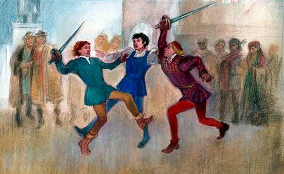
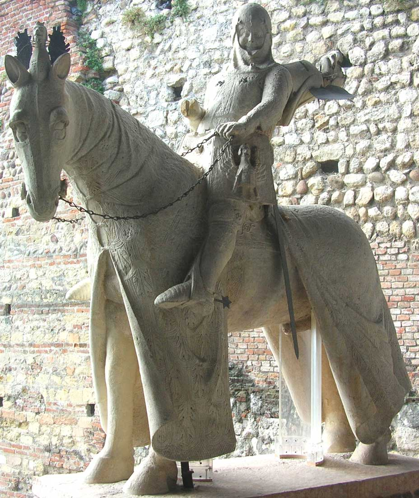

HOME
Romeo and Juliet - Act I
1 / 6

Arena di Verona
2 / 6

Juliet's House
3 / 6

Chiesa di Sant'Elena
4 / 6

Cangrande della Scala
5 / 6

Piazza dei Signori
6 / 6

Juliet's Tomb
A journey through history:

- Roman Age: The Roman foundation of "Colonia Verona Augusta" was founded in the 1st century BC. Important center for both military and commercial activities. Arena of Verona was built in the 1st century AD. The Ponte Pietra and the Roman Theatre are examples of archaeological remains.
- Middle Ages: Dominion of various lordships, including the Scaligeri and the Visconti. Verona becomes an important cultural and artistic center. Construction of Castelvecchio and the Lamberti Tower. Cangrande I della Scala and his role in history.
- Renaissance: Verona under the Serenissima Republic of Venice. Period of prosperity and stability. Works by artists such as Mantegna, Titian and Paolo Veronese. Romeo and Juliet: Shakespeare's tragedy set in Verona.
- Modern Age: Fall of the Republic of Venice and Austrian rule. Verona became part of the Kingdom of Italy in 1866. The Risorgimento and the war of independence. Verona, border city between Italy and Austria-Hungary.
- Contemporary Age: Verona during the two world wars. Post-war reconstruction and economic boom. Verona city of art and culture, UNESCO world heritage site. Verona Arena and the Opera Festival.
- Verona today: Lively and modern city. Important tourist and cultural center. Diversified economy, with sectors such as tourism, industry and agriculture. Verona university city and research centre. A journey through the centuries, Verona retains its historical and cultural charm intact, offering to the visitors a unique and unforgettable experience.
Famous monuments:

- The Verona Arena: The Arena of Verona is a Roman amphitheater built in the 1st century AD. It is one of the largest and Better preserved amphitheaters in the world, with a capacity of approximately 15,000 spectators. The Arena is used for concerts, operas and other events.
- Castelvecchio: Castelvecchio is a fortified complex built in the 14th century by the Scaligeri family. The castle hosts a art museum with works by Mantegna, Titian and Paolo Veronese. It is also home to a library, of a archive and a natural history museum.
- La Torre dei Lamberti: La Torre dei Lamberti è una torre medievale alta 84 metri. È la torre più alta di Verona e offre una vista panoramica della città. La torre è stata costruita nel XII secolo dalla famiglia Lamberti.
- Juliet's House: Juliet's House is a medieval building said to have been Juliet's home Capulet, the protagonist of Shakespeare's tragedy "Romeo and Juliet". The building is a place of pilgrimage For lovers from all over the world.
- Piazza delle Erbe: Piazza delle Erbe is the main square of Verona. It is a lively and crowded place, with numerous Cafe, restaurants and shops. The square is dominated by the Torre dei Lamberti and the Palazzo del Comune.
- The Stone Bridge: The Ponte Pietra is a Roman bridge built in the 1st century AD. It is the oldest bridge in Verona and passes through the Adige river. The bridge was rebuilt after its destruction during the Second War World.
- The Giusti Garden: The Giusti Garden is a 16th century Italian garden. It is one of the most beautiful gardens of Italy ed And famous for its caves, fountains and statues. The garden is an ideal place for relax and stroll.
- The Basilica of San Zeno Maggiore: The Basilica of San Zeno Maggiore is a 12th century Romanesque basilica. It is one of the largest churches important of Verona and is famous for its facade and its portal. The basilica is an example of architecture Lombard Romanesque.
- The Roman Theatre: The Roman Theater is a Roman theater built in the 1st century AD. It is located on the banks of the river Adige and And It was used for theatrical and musical performances. The theater has recently been restored and it's Now used for concerts and other events.
- Valpolicella: Valpolicella is a hilly area located north of Verona. It is famous for the production of wines precious, like Amarone and Recioto. Valpolicella is also an ideal place for walking and trekking. These are just some of the descriptions that can be completed. Verona is a city rich in history and culture, with many other attractions to discover.
Contact Me
vrtd05000t@istruzione.it
Verona, IT
+39045501110 e +39045582475
Powered by Prof. Andrea De Luca